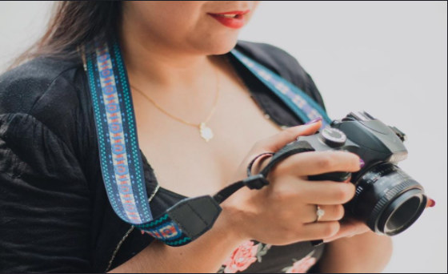

SOBRE MI
“El componente más importante de una cámara está detrás de ella”. Ansel Adams
¡Hola!.
Yo soy Yuriko S. Luna, comunicóloga de profesión, fotógrafa por vocación. A los 13 años nació mi interés por la fotografía, me dio curiosidad cómo es que un objeto lograba congelar momento, fue ahí cuando me atrapó hasta momento en que se convirtió en mi pasión y lo que más amo hacer.
Por azares del destino y la curiosidad de mi ojo por que explorar otros géneros, el retrato llegó para quedarse en mi vida, me gusta representar la esencia de las personas y contar una historia a traves de mis retratos por eso te invito a darme la oportunidad de capturar un pedacito de ti.